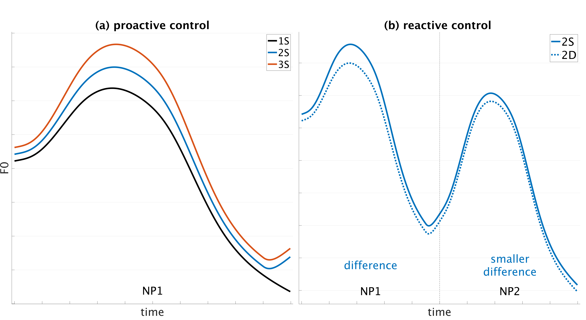
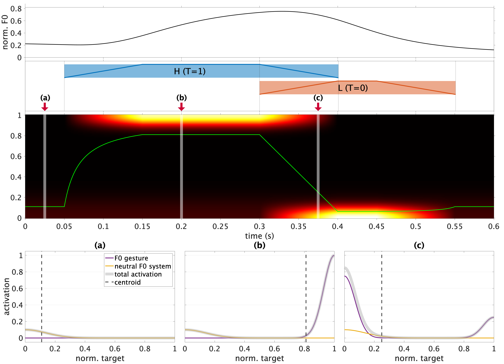
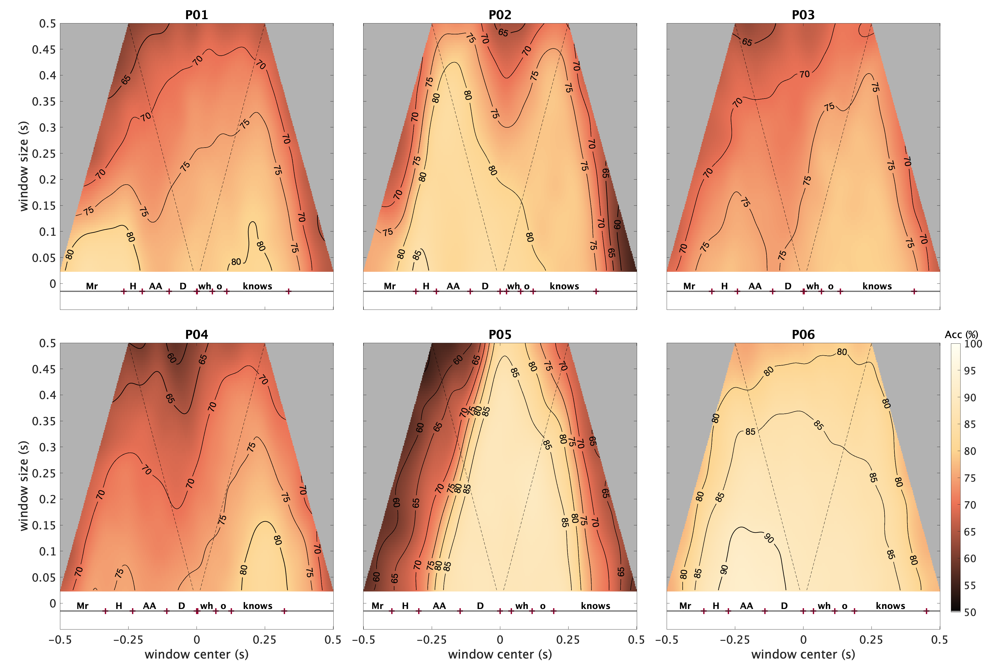
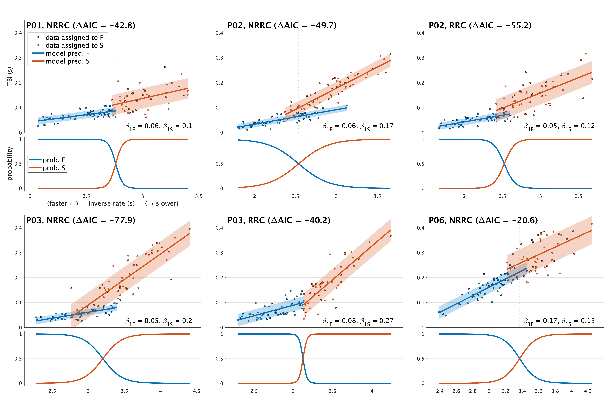
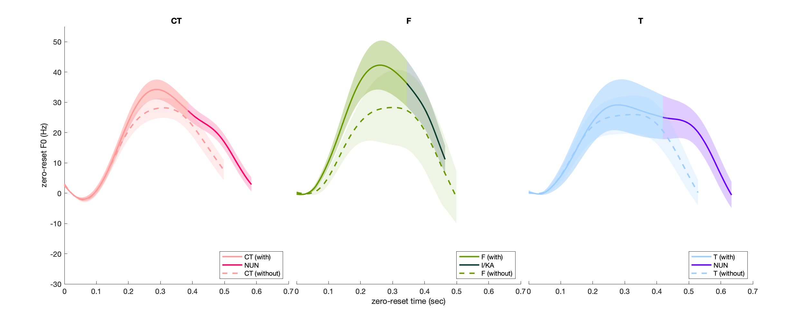

Evidence for F0 preplanning and adaptive control
A production experiment was conducted to investigate speakers' (i) pre-planned and (ii) adaptive F0 control.
In particular, the experiment examined whether speakers vary F0 parameters (i) according to the initially planned utterance length and (ii) in response to the unanticipated changes in the length.
A novel experimental paradigm was developed in which the visual stimuli that cue the parts of the utterance are delayed until after participants initiate an utterance.
Analyses of F0 trajectories found strong evidence for both pre-planned and adaptive F0 control.

F0 control: pitch targets vs. pitch register
A study was conducted to examine speakers' cognitive control of F0, by evaluating target-control and register-control hypotheses.
In the target-control hypothesis, it is individual pitch targets that speakers control to produce variations in F0, whereas in the register-control hypothesis,
it is the control of pitch register (in which the pitch targets are defined) that induces F0 variations.
These hypotheses were assessed with empirical F0 trajectories, specifically by examining the correlations between F0 peaks and valleys and through computational modeling.
The results suggest that speakers may control F0 by adjusting pitch register rather than by changing targets.

Functional relations between speech rate and phonetic variables
This study examined how phonetic measures covary with speech rate, specifically assessing whether there is evidence for linear and/or non-linear relations with rate, and how those relations may differ between phrase boundaries.
Productions of English non-restrictive (NRRCs) and restrictive relative clauses (RRCs) were collected using a method in which variation in speech rate was cued by the speed of motion of a visual stimulus.
Analyses of articulatory and acoustic variables showed that the variables associated with a phrase boundary that follows the RC were more susceptible to rate variation than those at a boundary that precedes the RC.
Phonetic variables at the post-RC boundary also showed evidence for non-linear relations with rate, which suggest floor or ceiling attenuation effects at extreme rates.

Temporal localization of syntactic-prosodic information
This study used a novel neural network-based analysis method for temporally localizing prosodic information that is associated with syntactic contrast in acoustic and articulatory signals.
Neural networks were trained on multi-dimensional acoustic and articulatory data to classify the two types of relative clauses (RRCs vs. NRRCs), and the network accuracies on test data were analyzed.
The results found two different patterns: (i) syntactically conditioned prosodic information was either widely distributed around the boundaries or (ii) narrowly distributed at specific locations.
The findings suggest that prosodic expression of syntactic contrasts does not occur in the uniform way or at a fixed location, but rather it is accomplished with various strategies.

Phonetic evidence for hierarchical prosodic phrases
This study argues that the existing phonetic evidence for hierarchical organization of prosodic phrases is ambiguous, and that a non-hierarchical organization of phrases is also consistent with the evidence.
To compare hierarchical and non-hierarchical organization models, the current study elicited productions of English NRRCs and RRCs at varying speech rates. Articulatory and acoustic variables associated with prosodic boundaries were analyzed, incorporating speech rate as a covariate.
Overall, the evidence for multiple levels of prosodic phrase categories was not very compelling. The measures that were most supportive of hierarchical phrase structure were measures of boundary-related slowing and gestural overlap at boundaries.

Prosody of Korean contrastive topic
This study investigated how Contrastive Topic (CT) is prosodically realized in Korean and further examined how the deletion of the postnominal particle =NUN interacts with prosody.
F0 trajectories of sentences that had CT in the subject phrase were analyzed and compared with those that had non-contrastive Topic (T) or Focus (F).
The results found that CT has a prosodic pattern that is distinct from T and F in the target region where CT, T, and F occurs;
yet, it is similar to F in the region following the target as both showed post-peak compression.
In addition, the results showed that the particle =NUN is not necessary to represent the meaning of CT, and the deletion of =NUN affects the prosodic pattern of a CT phrase.